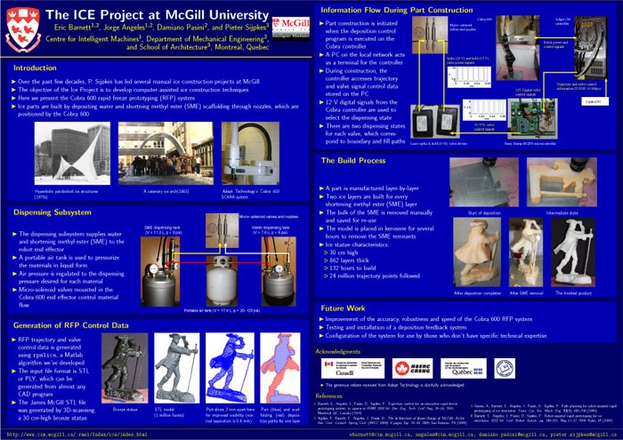

Publications
Articles published by project members and associates:
- A. Ossino and E. Barnett. "Path planning for robot-assisted rapid prototyping of ice structures," Centre for Intelligent Machines, Department of Mechanical Engineering, McGill University, Montreal, Canada, Tech. Rep. TR-CIM-09-02, 29 pages, Feb. 2009.
- E. Barnett, J. Angeles, D. Pasini, and P. Sijpkes. "The Architecture of Phase Change at McGill," ARCC 2009 - Leadership in Architectural Research, between academia and the profession, San Antonio, TX, 6 pages, Apr. 2009.
- E. Barnett, J. Angeles, D. Pasini, and P. Sijpkes. "Robot-assisted rapid prototyping for
ice structures," IEEE Int. Conf. on Robotics and Autom., Kobe,
Japan, pp. 146-151, May 2009.
- A. Ossino,E. Barnett, J. Angeles, D. Pasini, and P. Sijpkes, "Path planning for robot-assisted rapid prototyping of ice structures", Trans. Can. Soc. Mech. Eng 33(4), pp. 689-700, 2009.
- E. Barnett, J. Angeles, D. Pasini, P. Sijpkes. "Trajectory control for an innovative rapid freeze
prototyping system," ASME 2010 Int. Des. Eng. Tech. Conf., Montreal, QC, Canada, 9 pages, Aug. 2010.
- E. Barnett, J. Angeles, D. Pasini, P. Sijpkes. "A Heuristic Algorithm for Slicing in the Rapid Freeze Prototyping of Sculptured Bodies," in Brain, Body, and Machine: Proceedings of an International Symposium on the Occasion of the 25th Anniversary of the McGill University Centre for Intelligent Machines, J. Angeles, B. Boulet, J.J. Clark, J. Kovecses, K. Siddiqi (Eds.), Springer-Verlag: Berlin, pp. 149-162, 2010.
- E. Barnett, J. Angeles, D. Pasini, and P. Sijpkes. "Surface Mapping Feedback for Robot-Assisted Rapid Prototyping (video)," IEEE Int. Conf. on Robotics and Autom., Shanghai, China, pp. 3739-3744, May 2011.
- E. Barnett. "The design of an integrated system for rapid prototyping with ice", Ph.D. thesis, Department of Mechanical Engineering, McGill University, 2012.
Poster
To demonstrate the performance that can be achieved with the Cobra 600 rapid freeze prototyping (RFP) system, we built a 1/6 scale ice model of the James McGill statue located at McGill's downtown campus. The major steps of the build process, along with a more detailed description of our Cobra 600 RFP system, are included in the poster below, which was presented at the the CIM-REPARTI workshop at Laval University in Quebec City, QC, Canada on May 29, 2010.

Articles about the project:
Other projects and websites of interest:
Next: Multimedia - Images & Videos